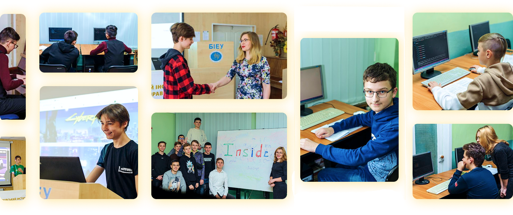
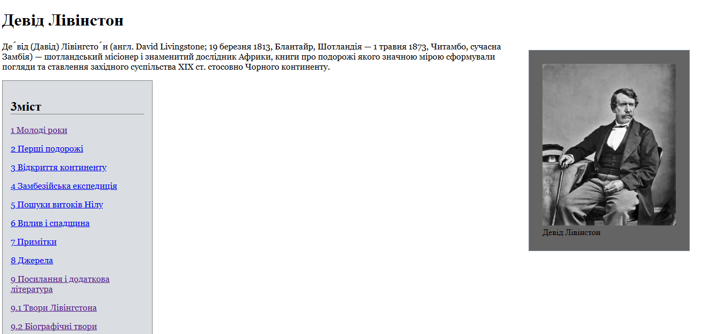
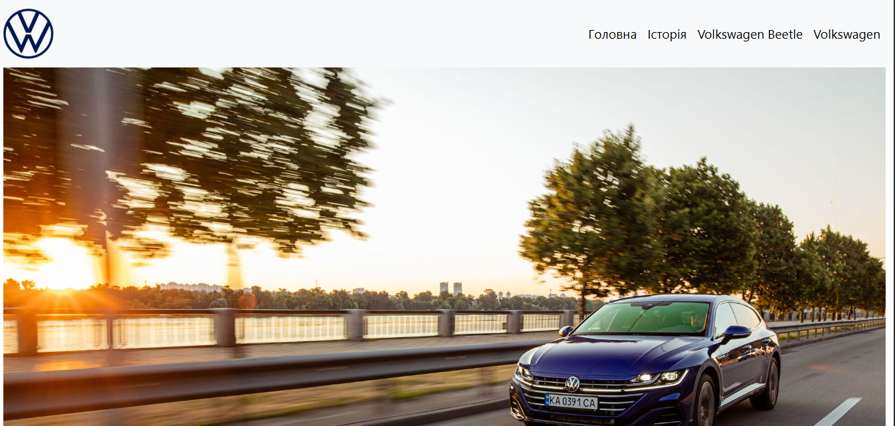
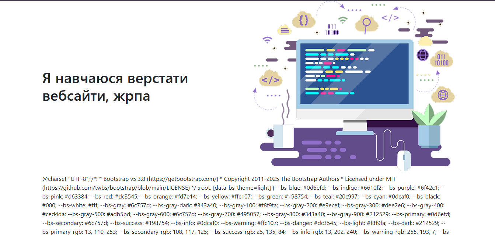
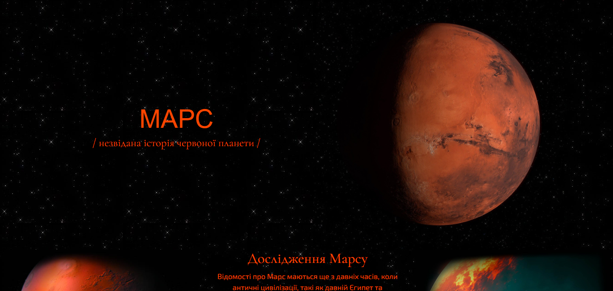
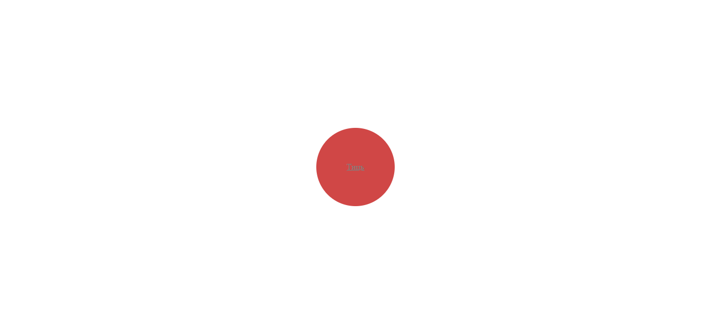
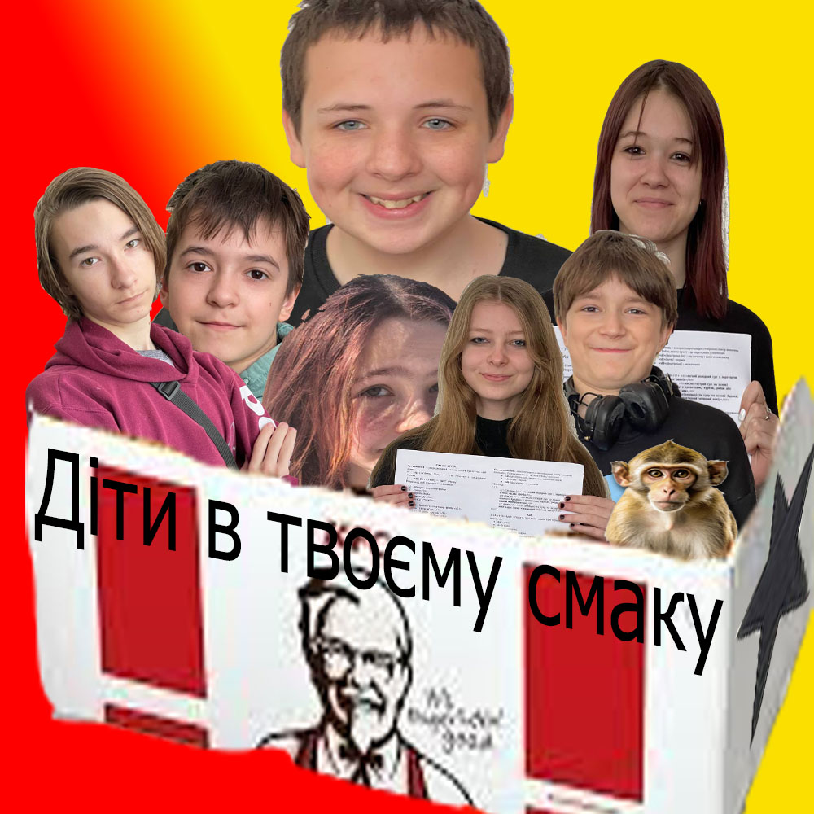
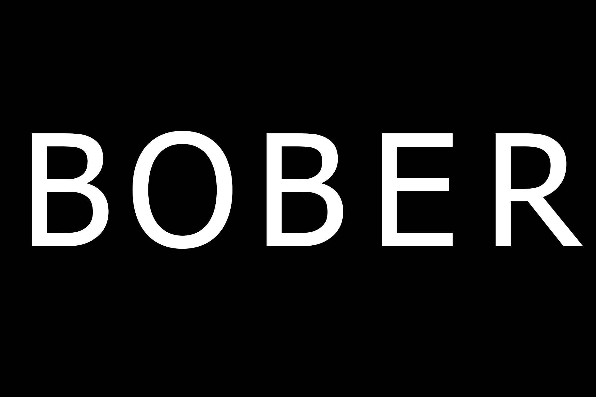
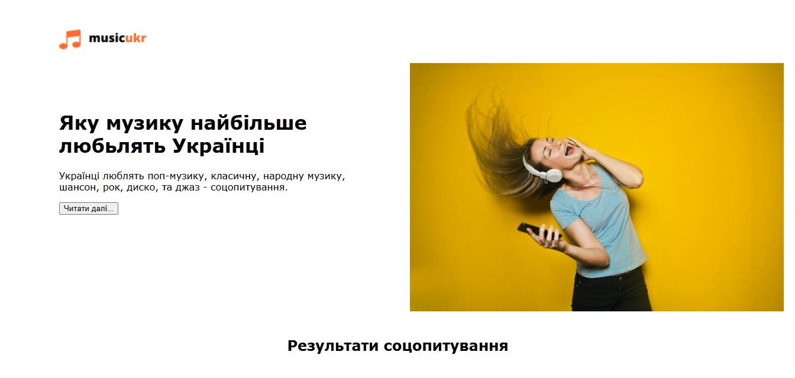
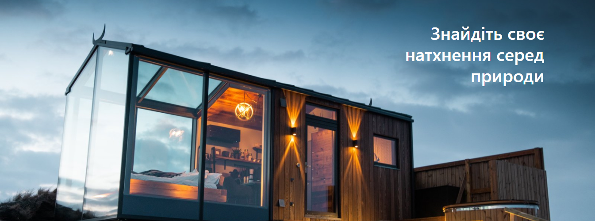

Inside School — це спеціалізована школа веб-програмування для учнів 5–11 класів, розташована у місті Біла Церква. Головна мета закладу — дати дітям ґрунтовні базові знання у сфері Frontend-розробки, щоб вони могли самостійно створювати та оформлювати сучасні вебсайти.
Напрямки навчання та технології Програма розрахована на 2 роки навчання (навчальний рік триває 9 місяців). Заняття проходять в офлайн-форматі 1 раз на тиждень.
Уже наприкінці першого року навчання кожен учень самостійно розробляє та презентує власний повноцінний вебсайт на обрану тему.
Оскільки заняття проходять за фіксованим графіком 1 раз на тиждень, батькам учнів молодших класів (5–6 класи) доводиться самостійно привозити та забирати дітей.
Одне офлайн-заняття триває 2 години. Деякі батьки хвилювалися, чи висидить дитина такий час, проте завдяки практичній роботі та перервам діти зазвичай не втомлюються.У разі повітряних тривог або непередбачуваних обставин школа передбачає можливість тимчасового переходу в онлайн-режим.
навчання може здатися занадто нудним та складним порівняно з ігровим Scratch.Вузька спеціалізація (тільки веб-розробка): Програма повністю заточена під Frontend. Якщо дитина мріє створювати 3D-ігри на Unity або програмувати роботів, цей курс їй не підійде.
Щоб був результат, дитина повинна практикуватися вдома самостійно. Якщо учень лінується відкривати ноутбук між уроками, ефективність курсу стрімко падає. Чи є у вас вдома комп'ютер, який дитина зможе використовувати для навчання?
Хоча помісячна оплата (від 1 400 грн) є середньою для ринку, сумарно за повний 2-річний курс набігає суттєва для сімейного бюджету сума.Вимоги до домашньої техніки: Для виконання домашніх завдань дитині обов'язково потрібен власний стаціонарний комп'ютер або ноутбук середньої потужності.Щоб мінімізувати ці ризики для вашої дитини, уточніть:Чи є можливість відвідати одне безкоштовне пробне заняття для перевірки інтересу?
Викладацький склад у Inside School підібраний з урахуванням того, що навчання орієнтоване саме на дітей та підлітків (учні 5–11 класів). Оскільки це приватна вузькопрофільна школа вебпрограмування, підхід до викладання тут відрізняється від класичного шкільного.Головні особливості вчителів та менторів закладу:
Формат «Ментор», а не «Суворий вчитель»: Батьки у відгуках найчастіше відзначають, що викладачі спілкуються з підлітками на рівних, як старші колеги по IT-сфері. Вони не ставлять низьких оцінок для покарання, а фокусуються на виправленні помилок у коді на практиці.Практикуючі фахівці
Курс охоплює складні технології розробки (HTML5, CSS3, JavaScript, Bootstrap 5, фреймворк Vue.js). Ментори самостійно володіють цими інструментами та вчать дітей писати код «чисто», за сучасними стандартами індустрії.Вміння пояснювати складне просто: Програма адаптована під вікові особливості дітей. Навіть для учнів 5–6 класів вчителі розкладають логіку циклів, масивів та стилів на простих життєвих прикладах, щоб діти не втрачали інтерес.💻

Сайт про Лівінстона
Сайт про Фольцваген
Comp Violet
Марс
Тиць
Фото групи
T=B
музика в Україні
HotelАдреса: м. Біла Церква, пров. 2-й Героїв Крут, 42 (на базі Інституту Економіки та Управління).Телефон: +38 (098) 176-24-67.
Офіційні сторінки: деталі можна переглянути на офіційному сайті Inside School або у спільноті Inside Facebook.
Вартість: орієнтовно від 1 400 грн на місяць (за 4 тижні / 8 годин занять).
{kind=link}
{kind=link}
{kind=link}